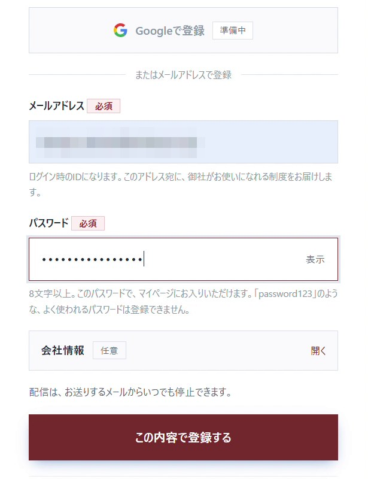
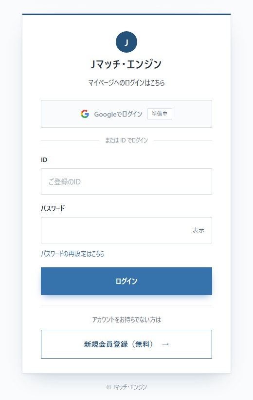
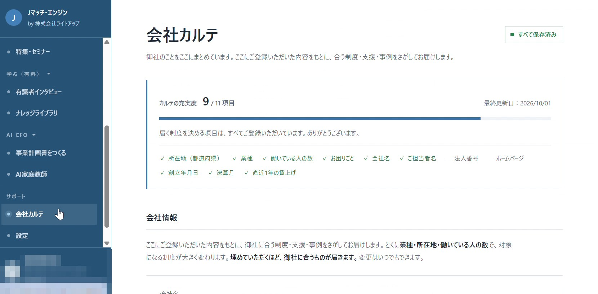
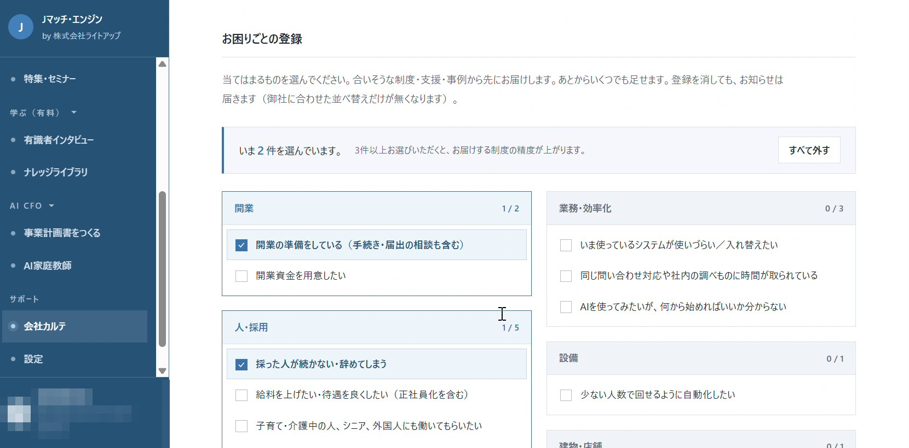
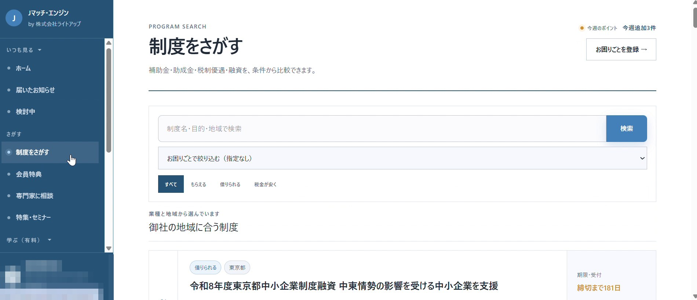
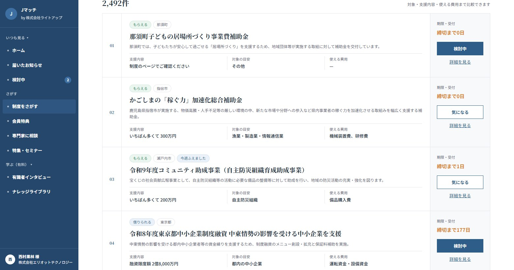
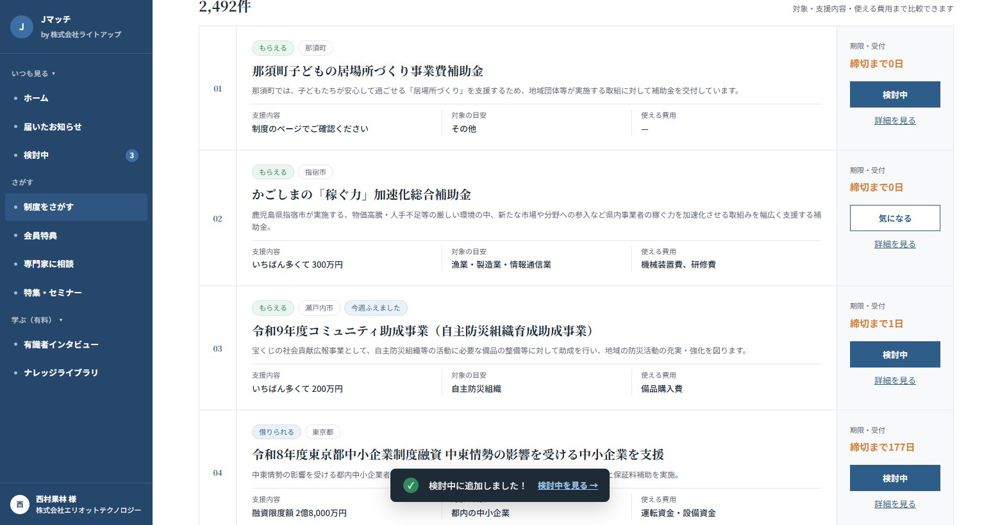
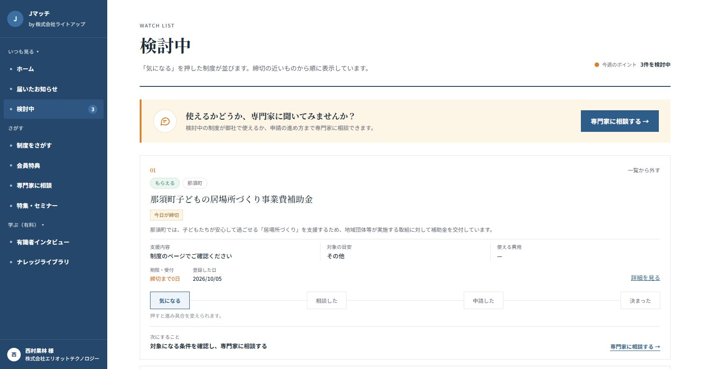
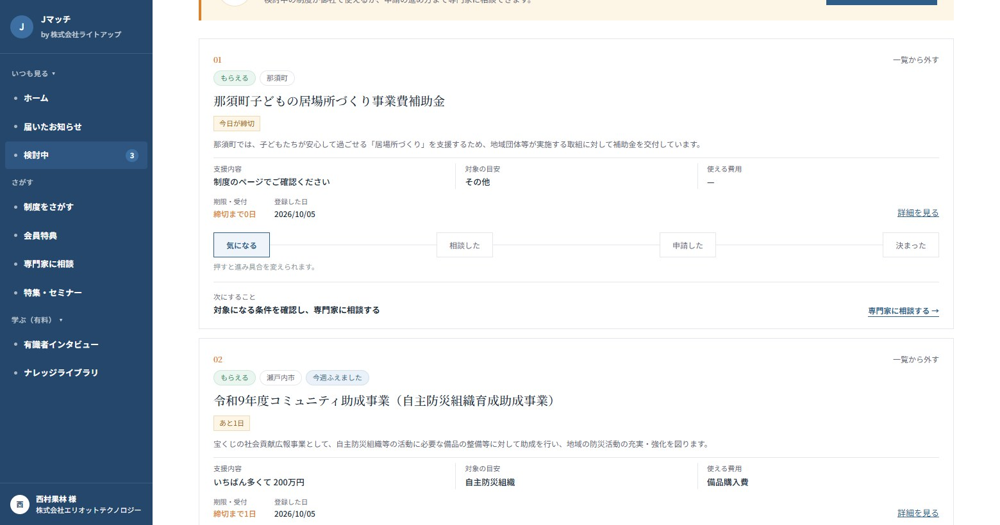
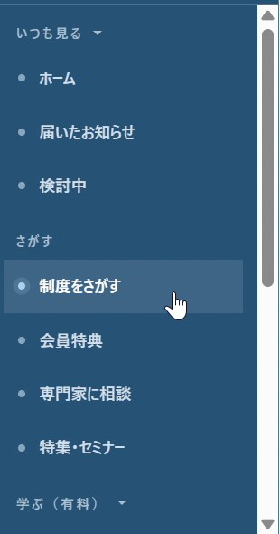

GETTING STARTED
はじめかたガイド
会員登録から初期設定まで
5つの手順で、御社に合う補助金・助成金・融資などの情報が届くようになります。
STEP 1
ログイン・新規登録
- 新規登録
- https://user.ai.jmatch.jp/t/jmatchengine
- ログイン
- https://user.ai.jmatch.jp/m/login?company=jmatchengine
- はじめての方は新規登録URLを開きます。
- メールアドレスとパスワード（8文字以上）を入力し、この内容で登録するを押します。
- 登録が終わると、そのままマイページ（ホーム）が開きます。
- 2回目からはログインURLで、ID（登録したメールアドレス）とパスワードを入れてログインします。


STEP 2
会社カルテを登録
ここで入れた内容に合わせて、御社に合う制度が届くようになります。最初に一度、登録をお願いします。
- 左メニューの会社カルテを開きます。
- 会社情報（所在地・業種・従業員数など）を入力します。とくに業種・所在地・従業員数で、届く制度が大きく変わります。
- 下にあるお困りごとから、当てはまるものにチェックを入れます（3つ以上がおすすめです）。
- 最後に保存するを押します。内容はあとからいつでも変えられます。


STEP 3
制度をさがす
新しく出た制度も含めて、補助金・助成金・融資・税の優遇をまとめて探せます。
- 左メニューの制度をさがすを開きます。
- キーワードを入れて検索。お困りごとや「もらえる／借りられる／税金が安く」でも絞り込めます。
- 一覧で支援内容・対象の目安・使える費用を比べ、くわしく知りたいものは詳細を見るで中身を確認します。


STEP 4
「気になる」で検討中へ
あとで見返したい制度は、「気になる」を押すだけで「検討中」にまとめておけます。
- 「制度をさがす」の一覧で、気になる制度の気になるを押します。
- 画面の下に「検討中に追加しました！」と表示され、ボタンが検討中に変わります。左メニュー「検討中」の件数もひとつ増えます。
- まちがえて押したときは、もう一度押すと外れます。
- 左メニューの検討中を開くと、保存した制度が締切の近い順に並びます。「制度をさがす」と同じく、支援内容・対象の目安・使える費用・詳細を見るも確認できます。


STEP 5
専門家に相談
「うちでも使える？」と思ったら、「検討中」から専門家に相談できます。申請の進め方まで相談できます。
- 左メニューの検討中を開きます。
- 一覧のいちばん上にある専門家に相談する →を押します。各制度の枠の下にある専門家に相談する →からも同じように進めます。
- 左メニュー「専門家に相談」のページが開くので、そこから相談します。

INFO
そのほか

左メニューの会員特典特集・セミナーなどは、内容を随時追加していく予定です。新しいものが入ったら、ホームや「届いたお知らせ」でご案内します。
ポイントまずは STEP 2 の会社カルテだけでも登録しておくと、合う制度が届きはじめます。